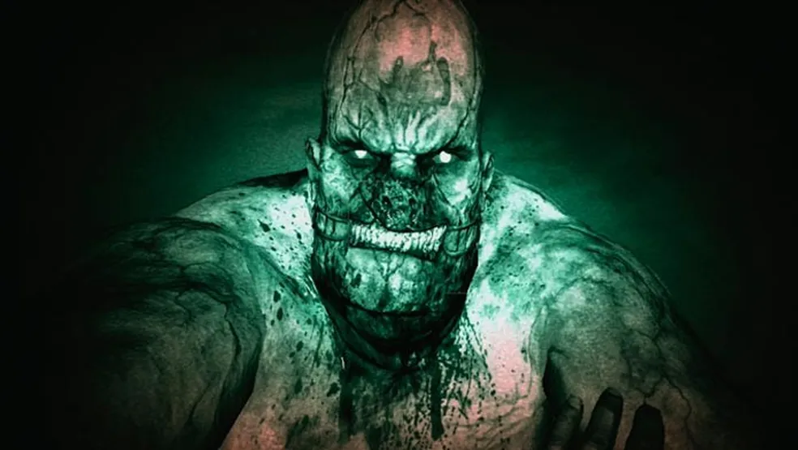
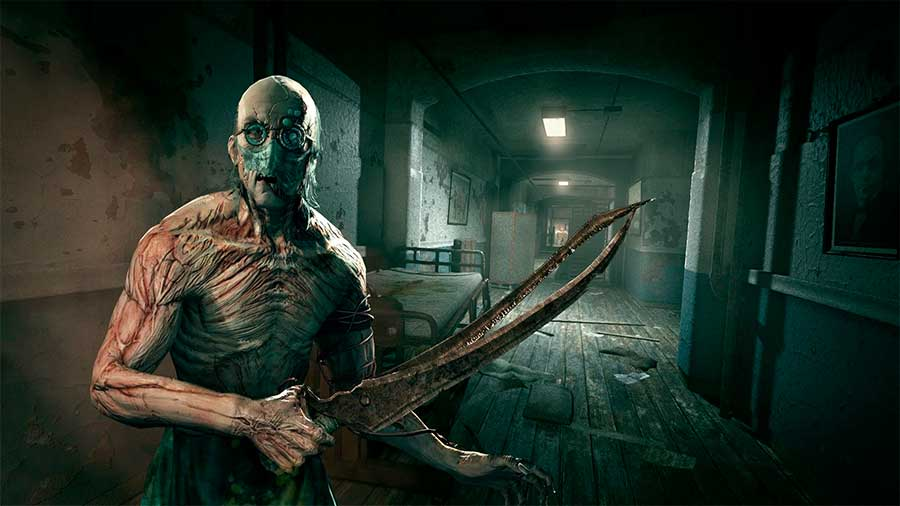
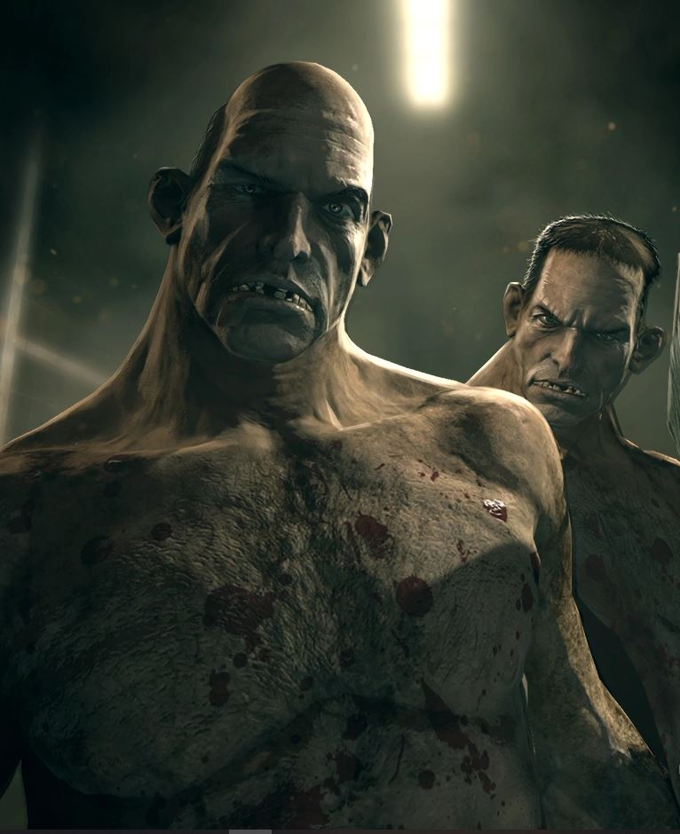

Sinopse
Outlast coloca você na pele de Miles Upshur, um jornalista investigativo que decide explorar o asilo de Mount Massive, um manicômio isolado no meio das montanhas. Quando chega, você descobre que coisas horríveis acontecem lá. Ao longo do jogo, você deve sobreviver a encontros com psicopatas e outros horrores, enquanto tenta descobrir o que realmente aconteceu no local. Prepare-se para momentos de tensão extrema, já que você estará desarmado, dependendo apenas de sua inteligência e habilidades para escapar dos perigos que rondam as sombras.
Sobreviva
O jogo se passa em um ambiente escuro e claustrofóbico, com corredores apertados, salas abandonadas e uma atmosfera opressiva que mantém você tenso o tempo todo. Sem armas para se defender, a única opção é correr, se esconder ou usar sua inteligência para escapar dos perigos que te cercam. A tensão nunca cessa, e a sensação de estar sendo observado está sempre presente.
O Jogo mais popular de terror
- 
- 
- 
Baixe agora o Game
Para deter eles, o jornalista investigativo também precisam de você. O Jogos mais famoso está de graça e esperando você para sentir o Horror. Se você é destemido, gosta de desafios e não tem medo, chegou a hora de se inscrever para reber o jogo.